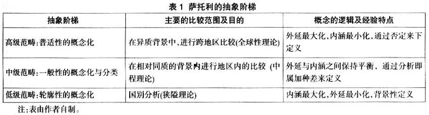
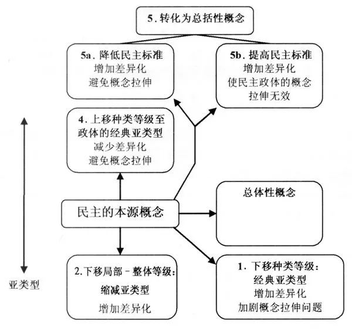

收录于合集
简
高奇琦
华东政法大学教授、政治学研究院院长，主要研究方向为比较政党政治、比较政治学理论、比较地区政治研究、比较民族政治等
【 摘要 】概念研究是比较政治分析的起点。西方比较政治学中的概念研究主要形成了两个重要的派别。一个是以萨托利为代表的本质主义，其倾向于用清晰简明的二分法来界定概念。另一个则是以科利尔和吉尔林为代表的折衷主义，其主张在具体情境的基础上调和两分法和分级法。西方的概念研究对于中国的比较政治学发展有重要的启示意义。西方相对成熟的概念分析框架对构建中国本土意义的比较政治学概念具有方法论上的指导意义。同时，本质主义的概念观提醒我们要重视概念的主体性和一致性，而折衷主义则提醒我们要关注概念的情境性和复杂性。
【关键词】比较政治分析；比较方法；概念研究；概念生成
**
**
比较政治研究方法对比较政治学学科具有非常重要的构成意义。 譬如，美国政治学家乔万尼·萨托利（Giovanni Sartori）和阿伦·利帕特（Arend Lijphart）都明确指出，比较政治学是一个用方法来界定其边界的学科。然而，国内的比较政治学研究更多关注国别研究和地区研究，真正加以比较的成果相对较少，而在科学意义上使用比较政治研究方法的成果则更少一些。究其原因主要是国内关于比较政治的方法论研究和训练相对薄弱。近年来，国内比较政治学界已经意识到这一问题，并开始逐步加深对比较政治研究方法的译介和讨论。 本文首先对比较政治研究方法作简要的描述，然后对作为比较分析起点的概念研究加以重点讨论。本文将对西方概念研究的学术史和最新进展进行梳理，最后就西方概念研究对中国比较政治学发展的启示进行简要分析。
比较政治研究方法的两次浪潮
国外比较政治研究方法的第一次浪潮出现在上世纪60年代末和70年代初的美国。 在60年代中后期，在美国已经有一些关于比较方法的讨论，并且一些重要的政治学家也参与其中。例如，亚瑟·科尔伯格（Arthur L. Kallberg）在1966年的《世界政治》（World Politics）上发表的“比较的逻辑：对政治系统比较研究的方法论评注”、哈罗德·拉斯韦尔（Harold Lasswell）和塞缪尔·比尔（Samuel Beer）在1968年《比较政治》（Comparative Politics）创刊号上分别发表的“比较方法的未来”和“比较方法与英国政治的研究”等论文。但是，这些成果主要是对比较政治方法的简要评述，并且其对后续研究的影响相对有限。所以，笔者将这些成果的出现看成是第一次浪潮的前潮。 高潮真正出现是在70年代初期，代表人物是乔万尼·萨托利（Giovanni Sartori）和阿伦·利帕特（Arend Lijphart）。 萨托利于1970年在《美国政治科学评论》（The American Political Science Review）上发表“比较政治中概念误构”（Concept Misformation in Comparative Politics）一文。在这篇文章中，萨托利指出：“在过去的十年中，比较政治作为一个实质性内容的领域得到了快速的扩展。这种范围的扩展引发了关于研究方法的一些前所未有的困难和问题。我们看起来是在进行一些比较研究的努力，但是却缺乏比较方法（例如在方法论的自觉和逻辑技巧上都是很缺乏的）”。鉴于这种比较研究方法的缺失，萨托利从理论系统中最基本的概念这一元素入手，分析了概念构成和概念抽象等问题。利帕特在1971年《美国政治科学评论》上发表的“比较政治与比较方法”一文，是比较方法史上另一篇开创性的文献。在这篇文献中，利帕特对比较方法的内涵与外延进行了较为清楚的界定，对比较方法与实验方法、统计方法以及案例分析方法之间的异同做了较为深入的比较，并且对比较方法的优势和劣势进行了深刻的剖析。亚当·普沃斯基（Adam Przeworski）和亨利·图纳（Henry Teune）在1970年出版的《比较社会研究的逻辑》是这一时期最重要的一本比较政治方法着作。在此书中，普沃斯基和图纳在密尔的求同法（method of agreement）和求异法（method of difference）的基础上提出了“最具相似性系统”（most similar system）和“最具差异性系统”（most different system）的比较研究设计。求同法和求异法在研究中对被控制变量的条件要求比较苛刻，而最具相似性系统和最具差异性系统方法则通过放宽条件大大增加了其在社会科学中的应用性。 这三篇文献是第一次浪潮中最具代表性和开创性的成果。之后的一些成果可以看成是这次浪潮的继续。
第二次浪潮的前潮最早出现在80年代末，其代表性成果是查尔斯·拉金（Charles C. Ragin）在1987年出版的《比较方法：在质性和定量策略之外》一书。 在这本书中，拉金明确界定了质性研究与定量研究之间的分野，并且尝试将布尔代数等一些新方法运用到比较政治研究之中。第二次浪潮来临的标志性事件是加里·金（Gary King）、罗伯特·基欧汉（Robert Keohane）和西德尼·维巴（Sidney Verba）合着的《社会研究设计：质性研究中的科学推理》一书的发表。在这部书中，作者指出：“好的定量研究和好的质性研究的逻辑之间并不存在根本意义的差别。……我们写这本书的目标是希望鼓励质性研究者认真对待科学推理（scientific inference）并把这一点整合到他们的研究工作中。我们希望，这种一致的推理逻辑以及我们展示这种逻辑的努力（以证明这种逻辑可以对质性研究者有用），可以促进这一领域的研究工作，同时也可以帮助其他社会科学领域的研究。”简言之，这本书的三位作者希望把科学推理作为质性研究和定量研究共同的基础，并以此来沟通两种路径的研究。这本书出版之后激发了一系列关于它的争论。其中最重要的是1995年发表在《美国政治科学评论》上的一组评论文章。之后，有两本重要着作都是以《社会研究设计》为对话蓝本出现的。一本是亨利·布拉迪（Henry E. Brady）和戴维·科利尔（David Collier）主编的《重新思考社会研究：多元工具与共享标准》，另一本是拉金所着的《重新设计社会研究：模糊集合及其他》。需要说明的是，此时《社会研究设计》一书的三位作者名字的首字母缩写KKV已然成为了这一研究的标志。KKV的研究对比较政治研究方法的影响是巨大的。正如詹姆斯·马洪尼（James Mahoney）所评述的，“没有人可以否认，《社会研究设计》对这个学科产生了巨大的影响……这本书推动了政治科学领域中方法论的自觉，而且这一遗产完全可以看成是有益的。”至今为止，这一浪潮仍然在向前发展。
作为比较分析起点的概念研究
在比较政治研究方法的两次浪潮中，概念研究都是核心问题。在第一次浪潮中，萨托利关于概念的讨论几乎是作为比较政治研究的标志性成果出现的。在第二次浪潮中，概念分析仍然是比较方法中非常重要的一支。 许多比较方法的新一代重要代表人物都在概念分析方面上具有重要着述，这些人物包括科利尔和约翰·吉尔林（John Gerring）等。而科利尔和吉尔林主编的《社会科学中的概念与方法：萨托利的传统》一书被看做是第二次浪潮的经典作品之一。
由此我们不禁要问： 为什么概念研究对于比较政治学如此重要呢？ 笔者认为主要有如下几点原因： 第一，比较的实质是概念的跨案例适用，或者用萨托利的表述是“概念旅行”（concept traveling）。 当人们进行比较时，往往是从某一起点类型出发的。人们总是在一定特殊经验的基础上对某个起点类型进行概念化，然后再用新的案例来验证原来的起点类型（或者是其总结后的概念），这样便产生了跨案例的比较。由于许多概念在产生时并不是为普遍性适用所设计的（很多概念是基于特定的经验生成的），所以当概念生成后来进行跨案例的适用时，就出现了萨托利所言的“概念拉伸”（concept stretching）问题。
第二，几乎所有的比较方法都把概念分析作为其研究的起点。 最常见的比较方法是相似案例比较，即在相似的国家中发现它们的重要差异点，并用这些差异来解释所观察到的政治结果。这一方法要求我们保证所比较的对象在绝大多数特征上都是一致的。那如何确定这些对象在多数特征上保持一致呢？这就涉及一个概念界定的问题。我们需要在已有成果的基础上对这些特征进行概念界定，并将其操作化，然后再进行相关特征的比较。同理，在另一种常见的比较方法——相异案例比较中，同样需要首先界定这些案例如何在多数特征上不一致。
在20世纪末期，比较政治研究方法又出现了一些新的进展，如比较历史分析（Comparative Historical Analysis）和质性比较分析（Qualitative Comparative Analysis） 。 这些进展同样高度依赖概念分析。 譬如，比较历史分析目前有两个最重要的分支。一个是过程追踪（process－tracing）分析，即力图通过对自变量X的变化如何导致因变量Y变化的过程和方式的研究，打开统计分析在变量X和Y之间的解释黑箱。在实际操作过程中，过程分析的关键是在X与Y之间找到新的、中间性的、解释性概念。另一个是时序分析法（temporal analysis），即观察各个事件在历史中的位置、持续时间以及先后顺序，并力图发现这些因素对特定结果的影响。过程追踪分析方法实际上在传统的历史分析中一直就存在，而时序分析的发展就在于它引入和构建了一整套完整的历史分析概念，如路径依赖（path dependence）、初始条件（initial conditions）、偶发事件（contingent event）、关键节点（critical juncture）、自我强化（self－reinforcement）、顺序（sequencing）、持续时长（duration）以及时机（timing）等等。同时，在时序分析中，对历史进程中的事件性质的定义以及对历史分割点或门槛的确定都需要在概念界定的基础上来实现。
再如，质性分析方法的进展主要体现在布尔代数法（Boolean algebra）和模糊集合法（Fuzzy sets）上。 这两种方法都是比较研究中的编码方法，但这两种方法却分别基于不同的概念界定模式。布尔代数法所基于的是清晰集合（crisp sets）理论。其中，作为原因（cause）与结果（effects）的诸“变量”只能取0和1这两个值，其运用的最佳对象是那些可以明显进行两分的概念，如市场与计划、男性与女性、穷国和富国等等。与之相反的是，模糊集合理论和基于此的比较方法则针对那些相对模糊的、程度性的概念进行更为细化的赋值。在模糊集合中，“变量”可以在1和0之间的连续区间内取任意值来表明不同程度的隶属度（如0.2、0，75等等）。每一个对象与相关概念之间都存在一定程度的隶属度，而这种隶属度可以进行定量的赋值。简言之，布尔代数或清晰集合分析基于的概念界定模式是本质主义的两分法，而模糊集合则基于程度主义的分级法。模糊集合的发展与分级法在概念分析中的进展密切相关。
总之，概念分析是比较政治研究的起点。 当人们对某项比较的结果争执不休时，这时最好的办法可能是回到起点，从概念界定开始重新审视已有的研究。正如萨托利和利帕特多次强调的，比较方法是在“变量太多、案例太少”的情况下使用的一种特殊的控制方法。这种控制的逻辑不是统计性控制，因为多国比较时的案例数量非常有限，同时在比较时，这类系统内部的变量非常多，涉及政治、经济、文化、社会等多个方面，而且这些变量还包括许多非常庞杂的次级变量。比较性控制主要通过变量特征的相似或相异来实现。例如，如果某一特征在多个案例中的表现都一样，那我们可以在比较分析中将这一特征视为常量。或者说，这一特征便被控制住了。这种控制特征使得比较方法更接近质性研究，同时，质性研究是与概念分析具有天然的亲缘关系。
概念研究的萨托利传统
19 70年的《比较政治中的概念误构》是萨托利关于概念分析的第一篇经典文献。在这篇文章中，萨托利与当时非常流行的定量分析和结构功能主义展开辩论。 萨托利把沉溺于调查技术与社会统计的研究者称为“过度自觉的思考者”（over－conscious thinker）。萨托利反对那种把所有的定性问题都转化为程度问题的定量分析，并且特别强调了分类研究在比较分析中的重要性。同时，萨托利也反对结构功能主义对概念过度功能化的定义。萨托利认为，结构功能主义虽然声称其会从结构和功能两方面来对概念进行界定，但是在操作过程中几乎所有的概念都是在功能化的意义上进行表达。在萨托利看来，结构功能取向的分析家成了跛脚的学者。定量分析的绝对论和结构功能主义都犯了一个同样的错误，即低估了概念形成后的“旅行”（travelling）问题。以参与和动员这两个概念为例。参与和动员本来是体现了独特的西方经验的、限于特殊文化的概念。参与并不是任何形式的“参加”，而是指一种自动的参加，而动员则表达一种在强大政府说服力的基础上消极地、被动地卷入的状态。 因此，在西方意义中，参与恰好是动员的反面。然而，在比较政治的背景下，参与和动员在很大程度上变成了重叠性的概念。在萨托利看来，这是一种极具讽刺性的概念运用。
萨托利在文中的另一个重要贡献是提出了抽象阶梯（ladder of abstraction）这一分析工具。 萨托利界定了抽象的三种范畴：第一，普适性的概念化（universal conceptualization）是概念抽象的高级范畴，其可以在异质的背景下进行跨地区的、全球性的比较。这一概念形成的特征是外延最大化且内涵最小化。对概念外延的界定往往通过否定性定义来实现；第二，一般性的概念化（general conceptualization）是概念抽象的中级范畴，其可以在相对同质的背景下进行地区内国家的比较。这一概念形成的特征是在外延与内涵之间保持某种平衡。对概念的界定主要通过属加种差（per genus et differentiam）来实现；第三，轮廓性的概念化（configurative conceptualization）是概念抽象的低级范畴，其主要用于国别分析。这一概念形成的特点是内涵最大化且外延最小化。在抽象阶梯的基础上，萨托利给出他所中意的概念分析方法：“第一，沿着具有更好中间范畴的中等抽象水平来发展这一学科；第二，沿着抽象阶梯，既向上又向下，且按以下方式进行演练：把相同与差异、相对较高的解释力和相对准确的描述性内容、宏观理论和经验验证等内容统一起来。”当然，萨托利的办法也并不完全是完美的。譬如，萨托利指出，通过减少属性来实现概念的进一步普遍化。但这会产生一个属性选择的问题，即到底应该减少哪些属性呢？这些减少是否会受到研究者个人喜好或价值判断的影响呢？譬如，西方学者在将民主的内涵在向上抽象时，基本上将其内涵削减为选举，这明显是有问题的。当然，萨托利也意识到这一问题的存在：“在这一意义上，只要沿着梯子攀爬，就总会有得有失。”

在1984年主编的《社会科学的概念：一个系统分析》一书中，萨托利撰写了前面最为重要的一章“概念分析指南”。在这一部分中，萨托利从整个社会科学的角度出发对概念所涉及的各种问题进行了非常详尽的讨论。萨托利先是讨论了术语（term）、意义（meanings）和指称（referent）之间的关系，并指出了概念的缺陷是由术语和意义之间的歧义（ambiguity）和意义与指称之间的模糊（vagueness）造成的。萨托利重点区分了陈述性定义（declarative definition）和指涉性定义（denotative definition）。陈述性定义旨在减少或消除歧义，而指涉性定义可以帮助人们较为容易地找到相对应的指称。萨托利还区分了界定概念的两类属性：决定性属性（defining properties）和伴随性属性（accompanying properties）。萨托利强调说，一定要确保概念定义是充分和简洁的：充分指的是定义包含足够的属性去确认其指称的对象和边界，简洁则是指决定性属性中间不包含任何伴随性属性。
萨托利非常感慨社会科学中在概念使用上的混乱。 他总结了目前社会科学研究中概念使用所存在的几种谬误 ： 第一 ，认为必须在上下文中才能消除歧义； 第二 ，认为概念精确是个虚假的理念； 第三 ，认为文学语言可以展示一种诗化的力量； 第四 ，认为概念可以被随意地使用； 第五， 认为稳定的词汇对于尚在起步阶段的科学是有害的； 第六 ，认为尝试给语言确立标准的努力是错误的。萨托利强调说，概念的界定一定要清晰，即在术语和意义之间要避免歧义，要消除一词多义和多词一义，同时也要简洁，即在意义和指称之间使用决定性属性来界定。总之，萨托利在该文中表露出一种“早期维特根斯坦式”的雄心，即希望通过给概念确立标准，然后为社会科学厘定出一组经过清晰界定的概念，并以此来推动社会科学的发展。萨托利的努力无疑是非常重要的，但是其主张也面临很大的困难。在目前社会科学研究中，几乎还没有人可以确立一整套标准化的、被人们普遍接受的概念。一个可以用来佐证的事实是，维特根斯坦在后期转向语言游戏说在某种程度上也宣告了其早期努力的失败。同时，萨托利建议用决定性属性来界定概念，而这一点的问题则在于究竟如何界定区分决定性属性和伴随性属性。这种属性的区分又可能会把某种价值倾向或个人偏好卷入其中。
萨托利的这种本质主义立场在之后的一些文献中有更为充分的表述和强调。 在其1987年的名着《民主新论》中，萨托利以民主为对象对其本质主义概念观做了进一步的阐发。萨托利强调说，民主是一个客体概念（object concept），是政治系统中的一个具体类别，因此对其的逻辑处理应是二分法的分类处理。萨托利反对将民主看成是一个属性概念（property concept），即将民主看成是一个政治客体的属性特征。在属性概念中，逻辑的处理不再是二分的“是与否”，而是连续性的“较大－较小”。在1991年的《比较与错误比较》一文中，萨托利用“猫－狗组合”的例子来批评概念的错误组合与使用。萨托利以“美国的联盟政府（coalition government）”为例来批评这种现象。萨托利认为，联盟政府仅会出现在议会制政体的国家中。在议会选举中，没有获得足额选票的政党可以联合其他政党组成联盟政府。而美国的总统制国家是不会出现联盟政府的，因为美国的总统竞选只可能是由一个政党获得，而不可能联合获得。萨托利批评说，詹姆斯·桑奎斯特（James L. Sundquist）关于美国联盟政府的研究实际上是一种类似于“猫－狗组合”的概念误用。在该文中，萨托利进一步批评了他所总结为程度主义（degreeism）的观点。 总之，萨托利反复强调，那种将种类差异与程度差异相混淆的观点是极其错误的。
科利尔的实用主义：在两分法和分级法之间
在概念研究中，另一个重要的研究者是科利尔。科利尔与他的合作者们完成了一系列重要的论文来对萨托利的观点作出回应 。在1993年的《再议概念拉伸》一文中，科利尔针对萨托利在《比较政治中的概念误构》一文中的核心观点进行了批驳。科利尔先是在一定程度上肯定了萨托利的贡献，然后又指出了萨托利分析框架的不足。科利尔认为，萨托利所依据的是古典分类法，即根据分类层次（taxonomic hierarchy）确定各种概念或范畴（categories）之间的关系。古典分类法强调，每个概念或范畴都有明晰的边界，其成员具有相同的属性。然而，20世纪的语言哲学和当代认知科学认为，许多概念并不具备上述属性，因此这从根本上对萨托利的观点形成了挑战。科利尔用家族相似性范畴（family resemblance category）和辐射型范畴（radial category）这两种非传统的范畴类别，来质疑萨托利的传统框架。 家族相似性范畴所描述的是如下情形： 第一 ，研究者在原初的个案研究中界定了一个具有理论意义的新范畴，它在该个案中有五个定义属性； 第二 ，原初个案是六个共享家族相似性范畴案例的一个； 第三 ，该家族相似性范畴有六个共享属性； 第四 ，每个个案只是其中五个属性的不同组合； 第五 ，没有一个属性为所有案例共享。运用对家族相似性的考察，我们可以发现，有些概念可能并不具有在所有案例中都存在的、可以作为定义标准的明确属性。换言之，在家族相似性的案例中，用某个或某些明确的属性来界定概念的做法是很难奏效的 。正是在这一意义上，科利尔对萨托利建立明确属性框架的做法进行了较为温和的批评。
与家庭相似性范畴一样，辐射型范畴中的个案也可能不具备定义属性的所有特征。不同在于，辐射型范畴的所有含义都体现在核心子范畴（central subcategory）上。 核心子范畴对应于该范畴的最佳个案或原型，由共同理解以及共同认知的一组属性构成。“非核心子范畴”（noncentral subcategory）是核心子范畴的各种变体，只具有核心子范畴中的部分属性。譬如，根据皮埃尔·奥斯蒂盖（Pierre Ostiguy）对“民主”的界定，“民主”这一核心子范畴的构成要素可以是：第一，广泛有效地参与统治过程；第二，限制国家权力，保护个人权利；第三，基于某种方式的平等主义的经济社会关系。具备要素一可构成“参与型民主”，同时要素一、二可构成“自由型民主”，而同时具备要素一、三则构成“大众型民主”。这三种民主形式都是非核心子范畴。 运用辐射型范畴，科利尔试图说明在现实中映射某一概念的相关案例往往只具有理想类型的部分特征，而非全部特征。这一观点同样可以看做是科利尔对萨托利在理想类型上构建明晰概念标准的一种软性批评。
在1999年的《民主与二分法》一文中，科利尔则主要是同萨托利在《民主新论》中的核心观点进行对话。科利尔指出，在关于“民主”的概念界定上，存在两分法和分级法两种。两分法的代表包括萨托利、普沃斯基（Adam Przeworski）、迈克。阿尔瓦雷兹（Mike Alvarez）等人，其界定主要集中在竞争性选举和政党轮替等关键要素上。分级法的代表包括罗伯特·达尔（Robert A. Dahl）和肯尼思·博伦（Kenneth Bollen），其界定主要集中在国家权力与社会权力博弈的程度上。科利尔认为，简单地争论说应该采用哪种方法是没有意义的，而在具体研究中应该采用一种基于情境来选择概念界定方法的实用主义路径，即聚焦于整体进程的民主研究适合使用二分法，而关注具体事件的民主研究则适合用分级法。
在2009年的《比较研究中的民主概念等级》一文中，科利尔则进一步发展了萨托利关于“沿着抽象阶梯向上或向下的分析策略”，并以等级（hierarchy）、亚类型（subtypes）和总括性概念（overarching concept）等为基础构建了一个新的概念分析策略图。 首先，科利尔将概念分为本源概念（root concept）、总括性概念和亚类型三种。然后，科利尔将萨托利的概念“阶梯”调整为概念“等级”，并提出“种类等级”（kind hierarchy）和“局部－整体等级”（part－whole hierarchy）两种等级类型。种类等级所描述的情况是，下级概念是上级概念的一个种类，其对应的亚类型是“经典亚类型”（classical subtypes）。局部－整体等级则描述，下级概念是上级概念（整体）的一个部分，其对应的亚类型是“缩减亚类型”（diminished subtypes）。
然后，科利尔以民主为例展示了他处理概念延伸危险的综合分析策略。 从民主的本源概念出发，科利尔的第一步“下移种类等级”、第三步“精确化民主的本源概念”和第四步“上移种类等级至政体的经典亚类型”实际上是对萨托利策略的继承。第三步与萨托利所强调的“要尽量在中级范畴上讨论概念”类似。第一步和第二步则与萨托利“向下和向上攀爬阶梯的策略”类似。科利尔的主要贡献是第二步“使用缩减亚类型”和第五步“转化为总括性概念”。下面以民主为例来解释科利尔的各个步骤。民主的本源概念主要来自于西方经验，所以避免概念拉伸的最容易方法是在欧美等西方国家的情境中讨论民主，并对民主的概念进行精确化（第三步）。如果将这种西方经验的民主（譬如自由式民主）运用在东方国家中，就会出现概念拉伸问题（第一步）。而将民主的内涵上移为某种政体的经典亚类型（如责任政体形式）并运用在其他国家中，则可以避免概念拉伸（第四步）。科利尔的缩减亚类型是指，可以将民主缩减一些内涵后界定自由式民主（缩减平等主义的诉求）或大众式民主（缩减保护个人权利），这样通过提高概念的差别化，然后再界定说某一国家的民主究竟是自由式民主还是大众式民主，这样也可以避免概念拉伸。同时，也可以采用总括性的概念，如降低民主标准，那么一些低度民主的国家也能被界定为民主国家，这样可以避免概念拉伸问题。或者提高民主标准，很多低度民主的国家就不会被界定为民主国家，这样也不会产生概念拉伸问题。需要说明的是，科利尔的总括性概念方法有非常明显的分级法特征。

图1 科利尔的概念等级策略图示
在2012年的《使类型学更有效》一文中，科利尔完整地审视和梳理了一些关于类型学研究的质疑。一些建立在定量研究方法基础上的意见认为类型学以及类型学得以建构的类别变量都是粗糙的，而科利尔却认为，这些观点是站不住脚的。然后，科利尔重新考察和检验了类型学在概念形成、完善测量、拓展维度与组织解释性要求等方面的积极作用。在这四篇文献中，科利尔都一直在与萨托利对话。当然，每次对话的侧重点有所不同。在1993年的论文中，科利尔尝试用认知科学中的新发展来挑战萨托利的本质主义。在1999年的论文中，科利尔试图在本质主义和程度主义之间开辟出一条实用主义的折衷路径。在2009年文章中，科利尔则尝试在萨托利的抽象阶梯基础上发展出更为复杂和完整的概念分析路径。在2012年的论文中，科利尔则更多地向萨托利的本质主义类型学回归。
吉尔林的概念审美标准与综合分析策略
吉尔林是西方概念研究中新生代的领军人物。 在1999年的《怎样才算一个好概念》一文中，吉尔林尝试对萨托利的概念审美标准进行修正。在《概念分析指南》中，萨托利将评价概念好坏的标准简化为一组规则，并特别强调了清晰和简洁等内涵。 吉尔林不太赞同萨托利的简化标准，并提出了一组界定概念恰当（conceptual adequacy）的综合标准。 这组标准包括： （1）熟悉（familiarity） ，即让普通学术观众也要感觉到这个概念不那么生疏和遥远。这一点强调要尽量少创造新词（除非已有词汇不能表达某种特定涵义）； （2）音韵（resonance）。 譬如，押韵的一词词汇会使人们容易记住他们（如makers, breakers, takers）； （3）简约（parsimony） 。譬如，同样表达意识形态的涵义，ideology比political belief－system更简约； （4）一致（coherence）， 即概念的外围特征与其核心含义要啮合起来，这一点是针对内涵而言的； （5）差异（differentiation） ，即该概念要易与其他不同的概念区分开来，这一点是针对外延而言的； （6）深度（depth） ，即概念也要具备比较丰富的伴随性属性； （7）理论功效（theoretical utility） ，即概念的提出要实现推动理论构建的目的； （8）现实功效（field utility） ，即概念要对现实世界的现象有清晰和对应的投射。吉尔林批驳了萨托利关于概念构建的早期维特根斯坦式的雄心，并认为概念构建需要在其表述的八个标准之间进行折衷。与萨托利明确批评情境主义的概念生成完全不同，吉尔林特别强调了情境对于概念界定的重要意义。
在2003年的《让普通语言运转起来》一文中，吉尔林提出了界定概念的一种综合策略。在该文中，吉尔林指出了界定概念的三个步骤： 第一，抽样性使用（sampling usages） ，即对一个概念的代表性用法和定义进行抽样检查； 第二，类型化属性（typologizing attributes） ，即把非特殊的属性（non－idiosyncratic attributes）整理到一个单一类型中； 第三，构建最小－最大定义（min－max definitions）， 即首先通过识别一个概念的本质要素来确定其最小定义，然后再通过识别最大集合的相关属性来界定其理想类型定义（最大定义）。（最小定义仅需要辨别出该概念最为本质的要素，同时这些要素要足以在外延上构成一个概念。理想类型定义试图包括最大集合的属性，而这些属性可以共同以最完整和最理想的方式定义这个概念。理想类型尽管总是有一个理想的指涉对象，但它不需要有一个真实的经验指涉对象。需要说明的是，在吉尔林界定概念的三个步骤中，“抽样性使用”是吉尔林自己的贡献。这是一种经验性做法，但吉尔林从统计学那里借鉴了一个更为科学的形式。“类型化属性”是萨托利的传统路径，即通过类型学来对概念的属性进行分类界定。“最小－最大定义”则整合了科利尔的关于辐射型范畴的讨论。吉尔林的理想类型类似于科利尔的核心子范畴。区别在于，吉尔林试图从科利尔的非核心子范畴中抽取中最小定义。以奥斯蒂盖对民主的界定为例，从“参与型民主”、“自由型民主”、“大众型民主”三个非核心子范畴中可以抽取最小定义，即要素一“广泛有效地参与统治过程”。总而言之，吉尔林所提出的是一种新的整合方案，同时这一方案也建立在之前萨托利和科利尔等重要成果的基础之上。
结语 西方概念研究对中国比较政治学发展的启示
在西方比较政治学的概念研究中，基本形成了两个重要的派别：一个是以萨托利为代表的本质主义立场，另一个是以科利尔和吉尔林为代表的折衷主义立场。 本质主义更倾向于用二分法来界定概念，并尝试构建一个关于概念评价的清晰和简明框架。折衷主义则力图调和二分法与分级法的矛盾，并希望在分析情境的基础上构建一个较为复杂但却完整的概念分析框架。折衷主义对分级法的吸收一方面可以看作是对本质主义的批评，另一方面也可以看作是对萨托利质性传统的拯救和发展。 整体来看，西方的概念研究对于中国的比较政治学发展有如下几点启示意义：
首先，西方相对成熟的概念分析框架对构建中国本土意义的比较政治学概念具有方法论上的指导意义。 目前中国的比较政治学处于一种蓄势待发的状态。许多研究者都提到了中国比较政治学的自身建设问题，即从中国经验和中国知识出发构建中国的比较政治学理论、议题和方法。而所有这一切的基础则是概念研究。中国目前正在经历复杂而深刻的政治社会变迁，这为比较政治学研究提供了丰富的素材和内容。同时，中国几千年绵延不绝和丰富多样的文化积淀也为概念研究奠定了知识基础。我们目前的不足是在概念分析的方法论方面比较欠缺，而西方在概念研究方面的进展可以帮助我们提出反映中国特质的比较政治学概念。譬如，萨托利和吉尔林关于概念审美标准的讨论会帮助我们提出一个好的概念。再如，萨托利的抽象阶梯和科利尔的概念等级可以帮助我们将生成的概念如何适用到案例的情境当中。
其次，本质主义的概念观提醒我们要重视概念的主体性和一致性。 具体而言，相关启示如下： 第一，对科学主义和定量至上的观点保持冷静的认识。 正如萨托利多次强调的，比较政治学研究中更为重要的特征是质性研究特征，即要更多地针对事物的一些本质性变化展开比较分析；第 二，要严肃地对待比较政治研究中的概念。在使用概念时，要尽量靠近其本源含义 。同时，在进行比较之前，要在已有知识的基础上对涉及的核心概念进行较为清晰的界定。反对轻率和随意地使用概念； 第三，对一些经常争论的、重要的概念要逐步达成共识，否则许多后续的讨论将会失去意义。 譬如，民主目前是最具争议性的一个概念。许多与政治学相关的国内外学术研讨会讨论到最后就会发现，在争论背后最本质的问题是，对民主的内涵缺乏共识。因此，如何在已有知识的基础上达成关于民主概念的共识是政治学界面临的一个非常重要的任务。
最后，折衷主义则提醒我们要重视概念的情境性和复杂性。 第一，对于一些重要的有争议概念可以采取吉尔林的“最小－最大定义策略”。 最小定义是学界关于某争议概念达成的最低共识，而最大定义（理想定义）则是某争议概念最丰富内涵的集合体。最低共识的达成可以避免我们在不同的概念范畴中进行非逻辑性对话，而理想定义的达成则有助于为我们的概念发展和实践推动设定一个远景目标；第 二，概念的生成和使用要考虑其情境因素。 这其中有两层含义。一方面，如科利尔的忠告，要根据情境来选择概念分析方法。譬如，在概念分析之初或者在概念共识尚未形成之时，两分法应该是最重要的方法。而在基本共识达成之后，分级法便逐渐会成为更主导的概念分析方法。另一方面，如吉尔林的提醒，要根据情境来理解和评价概念。概念不可能仅仅被培育在社会科学家的头脑实验室之中。概念要获得生命力，则需要与情境结合，发挥出其强大的现实功效。
从某种意义上讲，比较是一场争夺概念的知识战争。西方的比较政治学从西方经验出发总结出一些概念模式，然后用这些模式来分析非西方国家，并以某种文化霸权的形式来指导非西方国家的知识发展。 整体来看，非西方国家在目前的世界性概念竞争中处于劣势。非西方国家接下来需要做的工作是，需要从本土的经验和知识出发，或者在西方主流概念的基础上对其内涵与外延进行调整，并逐渐与西方达成某种概念共识，或者生成新的概念，然后通过概念旅行证明新概念的价值和功用，并最终为世界性的概念生产贡献自己的力量。
注：篇幅有限，参考文献请见原文。
文章来源：《 欧洲研究》2013年第5期
编辑：晞哲 米金金
学人约稿与入群邀请
**
**